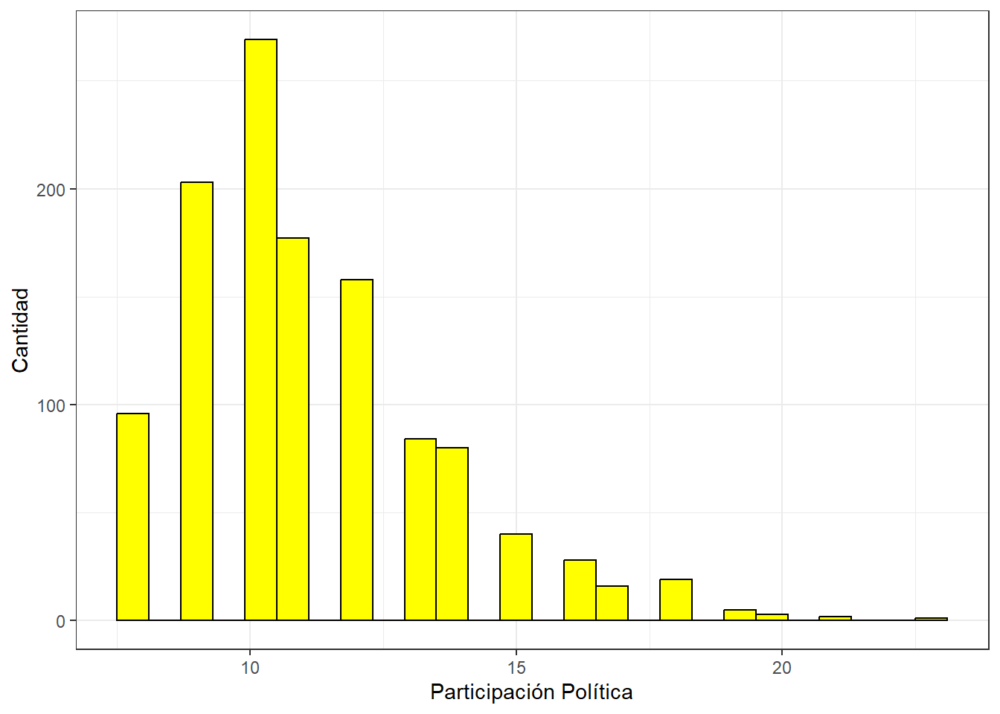

##Ajustes Iniciales
rm(list=ls())
options(scipen=999)Desigualdad y Participación Política
“Desigualdad y Participación Política en Chile”
En el Chile actual, la desigualdad social y la estratificación económica han emergido como temas de alta relevancia sociológica, planteando desafíos significativos para la cohesión social y la justicia distributiva en las sociedades contemporáneas. La percepción de la desigualdad juega un papel crucial en la configuración de actitudes y comportamientos sociales y políticos de los individuos, y su impacto se refleja de manera notable en la participación política de la población.
La educación cívica y la política educativa se presentan como herramientas fundamentales para abordar esta problemática, ya que contribuyen a la formación de ciudadanos informados y comprometidos con el bienestar colectivo.
En este estudio, se propone analizar cómo la percepción de la desigualdad social influye en la participación política de los ciudadanos en Chile. Diversas investigaciones indican que la participación política está estrechamente relacionada con el estatus socioeconómico, siendo aquellos con un nivel socioeconómico más alto más propensos a involucrarse en el sistema político.(Castillo et al. 2014) La desigualdad social en Chile ha sido un tema recurrente que ha generado tensiones y debates en la sociedad, contribuyendo a la fragmentación social y a la percepción de injusticia entre diferentes estratos de la población. Esta disparidad socioeconómica no solo ha impactado en la calidad de vida de los ciudadanos, sino también en su participación política y en la legitimidad de las instituciones democráticas.
Además, en la literatura existe una creciente preocupación por las menores tasas de participación electoral entre las cohortes de edad más joven. Por ejemplo, un estudio (Marc Hooghe et al. 2013) investigó la disposición a votar entre adolescentes de 14 años de 22 países europeos y encontró que, si bien la disposición a votar sigue siendo elevada en este grupo de edad, existe una clara división de género. Las niñas son más propensas a afirmar que votarán, mientras que los niños se ven más a sí mismos como futuros candidatos electorales. Un clima de aula abierta en la escuela contribuye a la voluntad de votar en futuras elecciones. Sin embargo, elementos que impactan en la participación de adultos no tienen un efecto significativo en la intención de votar entre adolescentes, lo que sugiere que la menor tasa de participación observada entre los más jóvenes no puede atribuirse simplemente a una falta de motivación política, sino que deben considerarse otros elementos para explicar esta tendencia a la baja.
“La evidencia empírica ha demostrado consistentemente que la participación política está relacionada positivamente con el entorno socioeconómico. Además, investigaciones recientes sugieren que los niños que provienen de familias de bajo estatus ya están menos dispuestos a involucrarse políticamente.” (Juan Carlos Castillo et al. 2015)
Ligado a lo anterior, las influencias positivas de condiciones socioeconómicas más favorables representan un aumento del 36% en los puntajes de las pruebas escolares. Estos hallazgos sugieren que en el sistema educativo chileno, caracterizado por su segregación socioeconómica, estos efectos podrían contribuir a ampliar la brecha en el rendimiento académico en el ámbito de la educación cívica entre los estudiantes de escuelas con mayores recursos y aquellos con menos recursos. Además, este estudio revela que, en promedio, los estudiantes con un estatus socioeconómico más elevado son más susceptibles a estas influencias, y que los efectos de la composición socioeconómica son más pronunciados en el sector privado subvencionado que en el sector público. (Diego Collado et al. 2015)
En ese sentido, la hipótesis central que orientará esta investigación es que a medida que aumenta el nivel de percepción de la desigualdad social, también aumenta su participación política. Se espera que la percepción de la desigualdad social actúe como un predictor principal de la participación política de los chilenos, motivándolos a comprometerse activamente en la esfera política para abogar por cambios sociales y económicos.
Para efectos de este trabajo, utilizaré datos obtenidos a través del Estudio Longuitudinal de Chile (ELSOC_ola2016), con el fin de observar como se comporta la participación política en Chile.
Trabajo en R
Ajustes Iniciales
Cargar Paquetes
pacman::p_load(sjlabelled,
dplyr, # Manipulacion de datos
stargazer, # Tablas
sjmisc, # Tablas
summarytools, # Tablas
kableExtra, # Tablas
sjPlot, # Tablas y gráficos
corrplot, # Correlaciones
sessioninfo, # Información de la sesión de trabajo
ggplot2, # Para la mayoría de los gráficos
GGally,
car,
texreg,
sjlabelled,
fastDummies,
ggeffects)Cargar Base de Datos
load("Input/data original/ELSOC_W01_v4.01_R.RData")
View(elsoc_2016)
names(elsoc_2016) [1] "idencuesta" "ola" "version" "muestra"
[5] "cuestion_mig" "t01" "t02_01" "t02_02"
[9] "t02_03" "t02_04" "t03_01" "t03_02"
[13] "t03_03" "t03_04" "t04_01" "t04_02"
[17] "t04_03" "t04_04" "t04_05" "t04_06"
[21] "t04_07" "t05" "t06_01" "t06_02"
[25] "t06_03" "t06_04" "t06_05" "t06_06"
[29] "t06_07" "t06_08" "t07_01" "t07_02"
[33] "t08" "t09_01" "t09_02" "t09_03"
[37] "t10" "t11_01" "t11_02" "t11_03"
[41] "t11_04" "r01_01" "r02_01" "r01_02"
[45] "r02_02" "r01_03" "r02_03" "r01_04"
[49] "r02_04" "r01_05" "r02_05" "r01_06"
[53] "r02_06" "r01_07" "r02_07" "r01_08"
[57] "r02_08" "r01_09" "r02_09" "r01_10"
[61] "r02_10" "r01_11" "r02_11" "r01_12"
[65] "r02_12" "r01_13" "r02_13" "r03_01"
[69] "r03_02" "r03_03" "r03_04" "r03_05"
[73] "r03_06" "r03_07" "r03_08" "r04_01"
[77] "r04_02" "r04_03" "r04_04" "r05_01"
[81] "r05_02" "r06" "r07" "r08"
[85] "r09" "r10" "r11" "r12_01"
[89] "r12_02" "r12_03" "r12_04" "r12_05"
[93] "r12_06" "r12_07" "c01" "c02"
[97] "c03" "c04" "c05_01" "c05_02"
[101] "c05_03" "c05_04" "c05_05" "c05_06"
[105] "c05_07" "c05_08" "c06_01" "c06_02"
[109] "c06_03" "c06_04" "c06_05" "c06_06"
[113] "c07_01" "c07_02" "c07_03" "c07_04"
[117] "c07_05" "c07_06" "c07_07" "c07_08"
[121] "c08_01" "c08_02" "c08_03" "c08_04"
[125] "c09_01" "c09_02" "c09_03" "c09_04"
[129] "c10_01" "c10_02" "c10_03" "c11"
[133] "c12_01" "c12_02" "c12_03" "c12_04"
[137] "c12_05" "c12_06" "c12_07" "c12_08"
[141] "c12_09" "c12_09_otro" "c13" "c14_01"
[145] "c14_02" "c15" "c16" "c16_otro"
[149] "c17" "c17_otro" "c18_01" "c18_02"
[153] "c18_03" "c18_04" "c18_05" "c18_06"
[157] "c18_07" "c18_08" "c18_09" "c18_10"
[161] "c18_11" "c19_01" "c19_02" "c19_03"
[165] "c19_04" "c20" "c20_otro" "c21_01"
[169] "c21_02" "c21_03" "c21_04" "c21_05"
[173] "c21_06" "c21_07" "c21_08" "c21_09"
[177] "c21_10" "c21_11" "c22" "c23"
[181] "c24" "c25" "c26" "c27"
[185] "c28" "c29" "c30" "c31"
[189] "c32_01" "c32_02" "c33" "c34"
[193] "c35_01" "c35_02" "c35_03" "c35_04"
[197] "d01_01" "d01_02" "d01_03" "d02_01"
[201] "d02_02" "d02_03" "d03_01" "d03_02"
[205] "d04_01" "d04_02" "d05_01" "d05_02"
[209] "d05_03" "d05_04" "d06" "d07"
[213] "d08" "d09" "d10" "d11"
[217] "d12" "d13" "d14" "d15"
[221] "d16" "d17" "d18" "d19"
[225] "f01_01" "f01_02" "f01_03" "f01_04"
[229] "f01_05" "f01_06" "f01_07" "f02_01"
[233] "f02_02" "f02_03" "f02_04" "f03_01"
[237] "f03_02" "f04_01" "f04_02" "f05_01"
[241] "f05_02" "f05_03" "f05_04" "f05_05"
[245] "f05_06" "f05_07" "f05_08" "f06_01"
[249] "f06_02" "s01" "s02" "s03"
[253] "s04" "s05" "s06" "s07"
[257] "s08" "s09" "s10" "s11_01"
[261] "s11_02" "s11_03" "s11_04" "s11_05"
[265] "s11_06" "s11_07" "s11_08" "s11_09"
[269] "s12" "s13_01" "s13_02" "s13_03"
[273] "s13_04" "s13_05" "s13_06" "s13_07"
[277] "s13_08" "s14" "m0_sexo" "m0_edad"
[281] "m01" "m02" "m03" "m04"
[285] "m05" "m06" "m07" "m08"
[289] "m09" "m10" "m11" "m12"
[293] "m13" "m14" "m15" "m16"
[297] "m17" "m18" "m18_otro" "m19"
[301] "m20" "m21" "m22" "m23"
[305] "m24" "m25" "m26" "m27"
[309] "m28" "m29" "m30" "m31_01"
[313] "m31_02" "m31_03" "m31_04" "m32"
[317] "m33" "m33_otro" "m34_01" "m34_02"
[321] "m34_03" "m35" "m36" "m36_otro"
[325] "m37_01" "m37_02" "m38" "m38_otro"
[329] "m39" "m40_01" "m40_02" "m40_comuna"
[333] "m40_pais" "m41" "m42_01" "m42_02"
[337] "m42_03" "m42_04" "m42_04_otro" "m43"
[341] "m44" "m45" "m45_otro" "cod_m03"
[345] "cod_m04" "cod_m22" "cod_m23" "nhogar1"
[349] "nhogar2" "miembro01_sexo" "miembro01_edad" "miembro02_sexo"
[353] "miembro02_edad" "miembro03_sexo" "miembro03_edad" "miembro04_sexo"
[357] "miembro04_edad" "miembro05_sexo" "miembro05_edad" "miembro06_sexo"
[361] "miembro06_edad" "miembro07_sexo" "miembro07_edad" "miembro08_sexo"
[365] "miembro08_edad" "miembro09_sexo" "miembro09_edad" "miembro10_sexo"
[369] "miembro10_edad" "miembro11_sexo" "miembro11_edad" "miembro12_sexo"
[373] "miembro12_edad" "miembro13_sexo" "miembro13_edad" "region"
[377] "region_cod" "comuna" "comuna_cod" "ponderador01"
[381] "ponderador02" "fact_exp01" "fact_exp02" "estrato"
[385] "segmento" "n_visitas_entr" "prob_entr" "prob_n_entr"
[389] "annio_entr" "mes_entr" "dia_entr" "mod_t_dur"
[393] "mod_r_dur" "mod_c_dur" "mod_d_dur" "mod_f_dur"
[397] "mod_s_dur" "mod_m_dur" "cierre_dur" "estim_dur"
[401] "superv" "tipo_superv" "annio_superv" "mes_superv"
[405] "dia_superv" "idencuestador" "varios_enc" "sexo_enc"
[409] "annio_enc" "mes_enc" "dia_enc" "civil_enc"
[413] "nac_enc" "comuna_car_enc" "comuna_enc" "educ_enc"
[417] "estudios_enc" "estado_educ_enc" "ies_enc" "nombre_ies_enc"
[421] "trabaja_enc" "motivo_enc" "exp_campo_enc" "exp_n_campo_enc"
[425] "exp_capi_enc" "exp_n_capi_enc" "exp_annio_enc" "capacita_enc" dim(elsoc_2016)[1] 2927 428Selección de Variables
proc_data <- elsoc_2016 %>% select(m0_sexo,
m0_edad,
m01,
c08_01:c08_04,
c12_03,
c13,
c15,
c22,
c33,
c18_11)
names(proc_data) [1] "m0_sexo" "m0_edad" "m01" "c08_01" "c08_02" "c08_03" "c08_04"
[8] "c12_03" "c13" "c15" "c22" "c33" "c18_11" sjlabelled::get_label(proc_data) m0_sexo
"Sexo del entrevistado"
m0_edad
"Edad del entrevistado"
m01
"Nivel educacional"
c08_01
"Frecuencia: Firma carta o peticion apoyando causa"
c08_02
"Frecuencia: Asiste a marcha o manifestacion pacifica"
c08_03
"Frecuencia: Participa en huelga"
c08_04
"Frecuencia: Usa redes sociales para opinar en temas publicos"
c12_03
"Membresia: Partido o movimiento politico"
c13
"Interes en la politica"
c15
"Autoubicacion escala izquierda-derecha"
c22
"Frecuencia: Participacion del entrevistado en el movimiento social"
c33
"Percepcion subjetiva de clase social"
c18_11
"Grado de acuerdo: Las diferencias de ingreso son demasiado grandes" Procesamiento de Variables
proc_data <- proc_data %>% set_na(., na = c(-999, -888))
proc_data <- na.omit(proc_data)
proc_data <- as.data.frame(proc_data)
stargazer(proc_data, type = "text")
=======================================
Statistic N Mean St. Dev. Min Max
---------------------------------------
m0_sexo 1,806 1.602 0.490 1 2
m0_edad 1,806 45.027 15.233 18 80
m01 1,806 5.586 2.190 1 10
c08_01 1,806 1.720 1.026 1 5
c08_02 1,806 1.396 0.867 1 5
c08_03 1,806 1.252 0.712 1 5
c08_04 1,806 1.870 1.268 1 5
c12_03 1,806 1.074 0.327 1 3
c13 1,806 1.838 1.144 1 5
c15 1,806 7.363 3.959 0 12
c22 1,806 1.598 1.023 1 5
c33 1,806 2.346 0.814 1 5
c18_11 1,806 4.316 0.889 1 5
---------------------------------------save(proc_data, file = "Input/data proc/proc_data.RData")
## Nivel educacional
frq(proc_data$m01)x <numeric>
# total N=1806 valid N=1806 mean=5.59 sd=2.19
Value | N | Raw % | Valid % | Cum. %
--------------------------------------
1 | 13 | 0.72 | 0.72 | 0.72
2 | 143 | 7.92 | 7.92 | 8.64
3 | 168 | 9.30 | 9.30 | 17.94
4 | 230 | 12.74 | 12.74 | 30.68
5 | 510 | 28.24 | 28.24 | 58.91
6 | 70 | 3.88 | 3.88 | 62.79
7 | 276 | 15.28 | 15.28 | 78.07
8 | 138 | 7.64 | 7.64 | 85.71
9 | 221 | 12.24 | 12.24 | 97.95
10 | 37 | 2.05 | 2.05 | 100.00
<NA> | 0 | 0.00 | <NA> | <NA>proc_data <- rename(proc_data, "educacion" = m01)
get_label(proc_data$educacion)NULLproc_data$educacion <- set_label(x = proc_data$educacion, label = "Educación")
frq(proc_data$educacion)Educación (x) <numeric>
# total N=1806 valid N=1806 mean=5.59 sd=2.19
Value | N | Raw % | Valid % | Cum. %
--------------------------------------
1 | 13 | 0.72 | 0.72 | 0.72
2 | 143 | 7.92 | 7.92 | 8.64
3 | 168 | 9.30 | 9.30 | 17.94
4 | 230 | 12.74 | 12.74 | 30.68
5 | 510 | 28.24 | 28.24 | 58.91
6 | 70 | 3.88 | 3.88 | 62.79
7 | 276 | 15.28 | 15.28 | 78.07
8 | 138 | 7.64 | 7.64 | 85.71
9 | 221 | 12.24 | 12.24 | 97.95
10 | 37 | 2.05 | 2.05 | 100.00
<NA> | 0 | 0.00 | <NA> | <NA>proc_data$educacion <- car::recode(proc_data$educacion, "c(1,2)=0; c(3,4)=1; c(5,6,8)=2; c(7,9,10)=3")
proc_data$educacion <- factor(proc_data$educacion,
labels = c("Sin Estudios", "Básica", "Media", "Superior"),
levels = c(0, 1, 2, 3))
## NSE
frq(proc_data$c33)x <numeric>
# total N=1806 valid N=1806 mean=2.35 sd=0.81
Value | N | Raw % | Valid % | Cum. %
--------------------------------------
1 | 280 | 15.50 | 15.50 | 15.50
2 | 723 | 40.03 | 40.03 | 55.54
3 | 715 | 39.59 | 39.59 | 95.13
4 | 75 | 4.15 | 4.15 | 99.28
5 | 13 | 0.72 | 0.72 | 100.00
<NA> | 0 | 0.00 | <NA> | <NA>proc_data <- proc_data %>% rename("NSE" = c33)
frq(proc_data$NSE)x <numeric>
# total N=1806 valid N=1806 mean=2.35 sd=0.81
Value | N | Raw % | Valid % | Cum. %
--------------------------------------
1 | 280 | 15.50 | 15.50 | 15.50
2 | 723 | 40.03 | 40.03 | 55.54
3 | 715 | 39.59 | 39.59 | 95.13
4 | 75 | 4.15 | 4.15 | 99.28
5 | 13 | 0.72 | 0.72 | 100.00
<NA> | 0 | 0.00 | <NA> | <NA>proc_data$NSE <- set_label(proc_data$NSE, label = "Nivel Socioeconómico")
get_label(proc_data$NSE)[1] "Nivel Socioeconómico"proc_data$NSE <- ifelse(proc_data$NSE %in% c(1, 2), "NSE Bajo",
ifelse(proc_data$NSE %in% c(3, 4), "NSE Medio",
ifelse(proc_data$NSE == 5, "NSE Alto", NA)))
proc_data$NSE <- factor(proc_data$NSE, levels = c("NSE Bajo", "NSE Medio", "NSE Alto"))
frq(proc_data$NSE)x <categorical>
# total N=1806 valid N=1806 mean=1.45 sd=0.51
Value | N | Raw % | Valid % | Cum. %
-------------------------------------------
NSE Bajo | 1003 | 55.54 | 55.54 | 55.54
NSE Medio | 790 | 43.74 | 43.74 | 99.28
NSE Alto | 13 | 0.72 | 0.72 | 100.00
<NA> | 0 | 0.00 | <NA> | <NA>## Sexo
frq(proc_data$m0_sexo)x <numeric>
# total N=1806 valid N=1806 mean=1.60 sd=0.49
Value | N | Raw % | Valid % | Cum. %
---------------------------------------
1 | 719 | 39.81 | 39.81 | 39.81
2 | 1087 | 60.19 | 60.19 | 100.00
<NA> | 0 | 0.00 | <NA> | <NA>proc_data$m0_sexo <- car::recode(proc_data$m0_sexo, "1=0;2=1")
proc_data$m0_sexo <- factor(proc_data$m0_sexo,
labels = c("Hombre", "Mujer"),
levels = c(0, 1))
proc_data <- rename(proc_data, "sexo" = m0_sexo)
get_label(proc_data$sexo)NULLproc_data$sexo <- set_label(x = proc_data$sexo, label = "Sexo")
frq(proc_data$sexo)Sexo (x) <categorical>
# total N=1806 valid N=1806 mean=1.60 sd=0.49
Value | N | Raw % | Valid % | Cum. %
----------------------------------------
Hombre | 719 | 39.81 | 39.81 | 39.81
Mujer | 1087 | 60.19 | 60.19 | 100.00
<NA> | 0 | 0.00 | <NA> | <NA>## Edad
frq(proc_data$m0_edad)x <numeric>
# total N=1806 valid N=1806 mean=45.03 sd=15.23
Value | N | Raw % | Valid % | Cum. %
-------------------------------------
18 | 13 | 0.72 | 0.72 | 0.72
19 | 21 | 1.16 | 1.16 | 1.88
20 | 16 | 0.89 | 0.89 | 2.77
21 | 32 | 1.77 | 1.77 | 4.54
22 | 31 | 1.72 | 1.72 | 6.26
23 | 29 | 1.61 | 1.61 | 7.86
24 | 36 | 1.99 | 1.99 | 9.86
25 | 33 | 1.83 | 1.83 | 11.68
26 | 30 | 1.66 | 1.66 | 13.34
27 | 33 | 1.83 | 1.83 | 15.17
28 | 40 | 2.21 | 2.21 | 17.39
29 | 32 | 1.77 | 1.77 | 19.16
30 | 51 | 2.82 | 2.82 | 21.98
31 | 34 | 1.88 | 1.88 | 23.86
32 | 34 | 1.88 | 1.88 | 25.75
33 | 36 | 1.99 | 1.99 | 27.74
34 | 36 | 1.99 | 1.99 | 29.73
35 | 43 | 2.38 | 2.38 | 32.12
36 | 44 | 2.44 | 2.44 | 34.55
37 | 27 | 1.50 | 1.50 | 36.05
38 | 32 | 1.77 | 1.77 | 37.82
39 | 23 | 1.27 | 1.27 | 39.09
40 | 35 | 1.94 | 1.94 | 41.03
41 | 41 | 2.27 | 2.27 | 43.30
42 | 41 | 2.27 | 2.27 | 45.57
43 | 40 | 2.21 | 2.21 | 47.79
44 | 27 | 1.50 | 1.50 | 49.28
45 | 29 | 1.61 | 1.61 | 50.89
46 | 43 | 2.38 | 2.38 | 53.27
47 | 36 | 1.99 | 1.99 | 55.26
48 | 44 | 2.44 | 2.44 | 57.70
49 | 33 | 1.83 | 1.83 | 59.52
50 | 48 | 2.66 | 2.66 | 62.18
51 | 35 | 1.94 | 1.94 | 64.12
52 | 37 | 2.05 | 2.05 | 66.17
53 | 33 | 1.83 | 1.83 | 68.00
54 | 40 | 2.21 | 2.21 | 70.21
55 | 43 | 2.38 | 2.38 | 72.59
56 | 48 | 2.66 | 2.66 | 75.25
57 | 30 | 1.66 | 1.66 | 76.91
58 | 35 | 1.94 | 1.94 | 78.85
59 | 23 | 1.27 | 1.27 | 80.12
60 | 36 | 1.99 | 1.99 | 82.12
61 | 20 | 1.11 | 1.11 | 83.22
62 | 15 | 0.83 | 0.83 | 84.05
63 | 25 | 1.38 | 1.38 | 85.44
64 | 28 | 1.55 | 1.55 | 86.99
65 | 40 | 2.21 | 2.21 | 89.20
66 | 22 | 1.22 | 1.22 | 90.42
67 | 23 | 1.27 | 1.27 | 91.69
68 | 18 | 1.00 | 1.00 | 92.69
69 | 8 | 0.44 | 0.44 | 93.13
70 | 27 | 1.50 | 1.50 | 94.63
71 | 14 | 0.78 | 0.78 | 95.40
72 | 11 | 0.61 | 0.61 | 96.01
73 | 21 | 1.16 | 1.16 | 97.18
74 | 24 | 1.33 | 1.33 | 98.50
75 | 23 | 1.27 | 1.27 | 99.78
77 | 1 | 0.06 | 0.06 | 99.83
78 | 2 | 0.11 | 0.11 | 99.94
80 | 1 | 0.06 | 0.06 | 100.00
<NA> | 0 | 0.00 | <NA> | <NA>proc_data <- rename(proc_data, "edad" = m0_edad)
get_label(proc_data$edad)NULLproc_data$edad <- set_label(x = proc_data$edad, label = "Edad")
frq(proc_data$edad)Edad (x) <numeric>
# total N=1806 valid N=1806 mean=45.03 sd=15.23
Value | N | Raw % | Valid % | Cum. %
-------------------------------------
18 | 13 | 0.72 | 0.72 | 0.72
19 | 21 | 1.16 | 1.16 | 1.88
20 | 16 | 0.89 | 0.89 | 2.77
21 | 32 | 1.77 | 1.77 | 4.54
22 | 31 | 1.72 | 1.72 | 6.26
23 | 29 | 1.61 | 1.61 | 7.86
24 | 36 | 1.99 | 1.99 | 9.86
25 | 33 | 1.83 | 1.83 | 11.68
26 | 30 | 1.66 | 1.66 | 13.34
27 | 33 | 1.83 | 1.83 | 15.17
28 | 40 | 2.21 | 2.21 | 17.39
29 | 32 | 1.77 | 1.77 | 19.16
30 | 51 | 2.82 | 2.82 | 21.98
31 | 34 | 1.88 | 1.88 | 23.86
32 | 34 | 1.88 | 1.88 | 25.75
33 | 36 | 1.99 | 1.99 | 27.74
34 | 36 | 1.99 | 1.99 | 29.73
35 | 43 | 2.38 | 2.38 | 32.12
36 | 44 | 2.44 | 2.44 | 34.55
37 | 27 | 1.50 | 1.50 | 36.05
38 | 32 | 1.77 | 1.77 | 37.82
39 | 23 | 1.27 | 1.27 | 39.09
40 | 35 | 1.94 | 1.94 | 41.03
41 | 41 | 2.27 | 2.27 | 43.30
42 | 41 | 2.27 | 2.27 | 45.57
43 | 40 | 2.21 | 2.21 | 47.79
44 | 27 | 1.50 | 1.50 | 49.28
45 | 29 | 1.61 | 1.61 | 50.89
46 | 43 | 2.38 | 2.38 | 53.27
47 | 36 | 1.99 | 1.99 | 55.26
48 | 44 | 2.44 | 2.44 | 57.70
49 | 33 | 1.83 | 1.83 | 59.52
50 | 48 | 2.66 | 2.66 | 62.18
51 | 35 | 1.94 | 1.94 | 64.12
52 | 37 | 2.05 | 2.05 | 66.17
53 | 33 | 1.83 | 1.83 | 68.00
54 | 40 | 2.21 | 2.21 | 70.21
55 | 43 | 2.38 | 2.38 | 72.59
56 | 48 | 2.66 | 2.66 | 75.25
57 | 30 | 1.66 | 1.66 | 76.91
58 | 35 | 1.94 | 1.94 | 78.85
59 | 23 | 1.27 | 1.27 | 80.12
60 | 36 | 1.99 | 1.99 | 82.12
61 | 20 | 1.11 | 1.11 | 83.22
62 | 15 | 0.83 | 0.83 | 84.05
63 | 25 | 1.38 | 1.38 | 85.44
64 | 28 | 1.55 | 1.55 | 86.99
65 | 40 | 2.21 | 2.21 | 89.20
66 | 22 | 1.22 | 1.22 | 90.42
67 | 23 | 1.27 | 1.27 | 91.69
68 | 18 | 1.00 | 1.00 | 92.69
69 | 8 | 0.44 | 0.44 | 93.13
70 | 27 | 1.50 | 1.50 | 94.63
71 | 14 | 0.78 | 0.78 | 95.40
72 | 11 | 0.61 | 0.61 | 96.01
73 | 21 | 1.16 | 1.16 | 97.18
74 | 24 | 1.33 | 1.33 | 98.50
75 | 23 | 1.27 | 1.27 | 99.78
77 | 1 | 0.06 | 0.06 | 99.83
78 | 2 | 0.11 | 0.11 | 99.94
80 | 1 | 0.06 | 0.06 | 100.00
<NA> | 0 | 0.00 | <NA> | <NA>## Participación Política
proc_data <- proc_data %>% rename("apoyo_causa" = c08_01,
"part_marcha" = c08_02,
"part_huelga" = c08_03,
"rrss_pol" = c08_04)
proc_data$apoyo_causa <- set_label(x = proc_data$apoyo_causa, label = "Participación: Apoya Causa")
get_label(proc_data$apoyo_causa)[1] "Participación: Apoya Causa"proc_data$part_marcha <- set_label(x = proc_data$part_marcha, label = "Participación: Marcha")
get_label(proc_data$part_marcha)[1] "Participación: Marcha"proc_data$part_huelga <- set_label(x = proc_data$part_huelga, label = "Participación: Huelga")
get_label(proc_data$part_huelga)[1] "Participación: Huelga"proc_data$rrss_pol <- set_label(x = proc_data$rrss_pol, label = "Participación: RRSS")
get_label(proc_data$rrss_pol)[1] "Participación: RRSS"frq(proc_data$apoyo_causa)Participación: Apoya Causa (x) <numeric>
# total N=1806 valid N=1806 mean=1.72 sd=1.03
Value | N | Raw % | Valid % | Cum. %
---------------------------------------
1 | 1120 | 62.02 | 62.02 | 62.02
2 | 202 | 11.18 | 11.18 | 73.20
3 | 376 | 20.82 | 20.82 | 94.02
4 | 85 | 4.71 | 4.71 | 98.73
5 | 23 | 1.27 | 1.27 | 100.00
<NA> | 0 | 0.00 | <NA> | <NA>frq(proc_data$part_marcha)Participación: Marcha (x) <numeric>
# total N=1806 valid N=1806 mean=1.40 sd=0.87
Value | N | Raw % | Valid % | Cum. %
---------------------------------------
1 | 1443 | 79.90 | 79.90 | 79.90
2 | 104 | 5.76 | 5.76 | 85.66
3 | 183 | 10.13 | 10.13 | 95.79
4 | 59 | 3.27 | 3.27 | 99.06
5 | 17 | 0.94 | 0.94 | 100.00
<NA> | 0 | 0.00 | <NA> | <NA>frq(proc_data$part_huelga)Participación: Huelga (x) <numeric>
# total N=1806 valid N=1806 mean=1.25 sd=0.71
Value | N | Raw % | Valid % | Cum. %
---------------------------------------
1 | 1571 | 86.99 | 86.99 | 86.99
2 | 70 | 3.88 | 3.88 | 90.86
3 | 119 | 6.59 | 6.59 | 97.45
4 | 36 | 1.99 | 1.99 | 99.45
5 | 10 | 0.55 | 0.55 | 100.00
<NA> | 0 | 0.00 | <NA> | <NA>frq(proc_data$rrss_pol)Participación: RRSS (x) <numeric>
# total N=1806 valid N=1806 mean=1.87 sd=1.27
Value | N | Raw % | Valid % | Cum. %
---------------------------------------
1 | 1142 | 63.23 | 63.23 | 63.23
2 | 114 | 6.31 | 6.31 | 69.55
3 | 275 | 15.23 | 15.23 | 84.77
4 | 192 | 10.63 | 10.63 | 95.40
5 | 83 | 4.60 | 4.60 | 100.00
<NA> | 0 | 0.00 | <NA> | <NA>proc_data$apoyo_causa <- factor(proc_data$apoyo_causa,
levels = c(1, 2, 3, 4, 5),
labels = c("Poco", "Poco", "Algo", "Mucha", "Mucha"))
proc_data$part_marcha <- factor(proc_data$part_marcha,
levels = c(1, 2, 3, 4, 5),
labels = c("Poco", "Poco", "Algo", "Mucha", "Mucha"))
proc_data$part_huelga <- factor(proc_data$part_huelga,
levels = c(1, 2, 3, 4, 5),
labels = c("Poco", "Poco", "Algo", "Mucha", "Mucha"))
proc_data$rrss_pol <- factor(proc_data$rrss_pol,
levels = c(1, 2, 3, 4, 5),
labels = c("Poco", "Poco", "Algo", "Mucha", "Mucha"))
## Membresías
proc_data <- proc_data %>% rename("pert_pp" = c12_03)
proc_data$pert_pp <- set_label(proc_data$pert_pp, label = "Pertenece: Partido Político")
get_label(proc_data$pert_pp)[1] "Pertenece: Partido Político"frq(proc_data$pert_pp)Pertenece: Partido Político (x) <numeric>
# total N=1806 valid N=1806 mean=1.07 sd=0.33
Value | N | Raw % | Valid % | Cum. %
---------------------------------------
1 | 1708 | 94.57 | 94.57 | 94.57
2 | 63 | 3.49 | 3.49 | 98.06
3 | 35 | 1.94 | 1.94 | 100.00
<NA> | 0 | 0.00 | <NA> | <NA>proc_data$pert_pp <- factor(proc_data$pert_pp,
levels = c(1, 2, 3),
labels = c("No", "Si", "Si"))
## Interés en la política
proc_data <- proc_data %>% rename("interes_pol" = c13)
frq(proc_data$interes_pol)x <numeric>
# total N=1806 valid N=1806 mean=1.84 sd=1.14
Value | N | Raw % | Valid % | Cum. %
---------------------------------------
1 | 1019 | 56.42 | 56.42 | 56.42
2 | 329 | 18.22 | 18.22 | 74.64
3 | 254 | 14.06 | 14.06 | 88.70
4 | 140 | 7.75 | 7.75 | 96.46
5 | 64 | 3.54 | 3.54 | 100.00
<NA> | 0 | 0.00 | <NA> | <NA>proc_data$interes_pol <- set_label(proc_data$interes_pol, label = "Interés Político")
get_label(proc_data$interes_pol)[1] "Interés Político"proc_data$interes_pol <- factor(proc_data$interes_pol,
levels = c(1, 2, 3, 4, 5),
labels = c("Sin interés", "Poco interés", "Poco interés", "Alto interés", "Alto interés"))
## Participación en Movimientos Sociales
proc_data <- proc_data %>% rename("part_movsoc" = c22)
proc_data$part_movsoc <- set_label(x = proc_data$part_movsoc, label = "Participación: Movimientos Sociales")
get_label(proc_data$part_movsoc)[1] "Participación: Movimientos Sociales"proc_data$part_movsoc <- factor(proc_data$part_movsoc,
levels = c(1, 2, 3, 4, 5),
labels = c("Poco", "Poco", "Algo", "Mucha", "Mucha"))
frq(proc_data$part_movsoc)x <categorical>
# total N=1806 valid N=1806 mean=1.28 sd=0.59
Value | N | Raw % | Valid % | Cum. %
---------------------------------------
Poco | 1425 | 78.90 | 78.90 | 78.90
Algo | 250 | 13.84 | 13.84 | 92.75
Mucha | 131 | 7.25 | 7.25 | 100.00
<NA> | 0 | 0.00 | <NA> | <NA>## Autoubicación Política
proc_data <- proc_data %>% rename("autoubicpol" = c15)
proc_data$autoubicpol <- set_label(x = proc_data$autoubicpol, label = "Autoubicación Política")
proc_data$autoubicpol <- car::recode(proc_data$autoubicpol, "c(0,1,2,3,4)=1; c(5)=2; c(6,8,9,10,11)=3")
proc_data$autoubicpol <- factor(proc_data$autoubicpol,
labels = c("Izquierda", "Centro", "Derecha"),
levels = c(1, 2, 3))
proc_data <- proc_data %>% filter(!is.na(autoubicpol))
frq(proc_data$autoubicpol)x <categorical>
# total N=1181 valid N=1181 mean=1.93 sd=0.80
Value | N | Raw % | Valid % | Cum. %
------------------------------------------
Izquierda | 417 | 35.31 | 35.31 | 35.31
Centro | 429 | 36.33 | 36.33 | 71.63
Derecha | 335 | 28.37 | 28.37 | 100.00
<NA> | 0 | 0.00 | <NA> | <NA>## Desigualdad de ingreso
proc_data <- proc_data %>% rename("percep_desigualdad" = c18_11)
proc_data$percep_desigualdad <- set_label(x = proc_data$percep_desigualdad, label = "Percepción Desigualdad")
proc_data$percep_desigualdad <- car::recode(proc_data$percep_desigualdad, "1:2=1; 3=2; 4:5=3")
proc_data$percep_desigualdad <- factor(proc_data$percep_desigualdad,
levels = c(1, 2, 3),
labels = c("No percibe desigualdad", "Indeciso", "Percibe desigualdad"))
frq(proc_data$percep_desigualdad)x <categorical>
# total N=1181 valid N=1181 mean=2.82 sd=0.55
Value | N | Raw % | Valid % | Cum. %
--------------------------------------------------------
No percibe desigualdad | 91 | 7.71 | 7.71 | 7.71
Indeciso | 36 | 3.05 | 3.05 | 10.75
Percibe desigualdad | 1054 | 89.25 | 89.25 | 100.00
<NA> | 0 | 0.00 | <NA> | <NA>Descriptivos
stargazer(proc_data, type = "text")
=======================================
Statistic N Mean St. Dev. Min Max
---------------------------------------
edad 1,181 45.107 15.524 18 78
---------------------------------------sjmisc::descr(proc_data)
## Basic descriptive statistics
var type label n NA.prc mean sd se
sexo categorical Sexo 1181 0 1.57 0.49 0.01
edad numeric Edad 1181 0 45.11 15.52 0.45
educacion categorical educacion 1181 0 2.95 0.92 0.03
apoyo_causa categorical apoyo_causa 1181 0 1.36 0.60 0.02
part_marcha categorical part_marcha 1181 0 1.22 0.53 0.02
part_huelga categorical part_huelga 1181 0 1.13 0.41 0.01
rrss_pol categorical rrss_pol 1181 0 1.49 0.77 0.02
pert_pp categorical pert_pp 1181 0 1.07 0.26 0.01
interes_pol categorical interes_pol 1181 0 1.67 0.73 0.02
autoubicpol categorical autoubicpol 1181 0 1.93 0.80 0.02
part_movsoc categorical part_movsoc 1181 0 1.32 0.62 0.02
NSE categorical NSE 1181 0 1.49 0.52 0.02
percep_desigualdad categorical percep_desigualdad 1181 0 2.82 0.55 0.02
md trimmed range iqr skew
2 1.59 1 (1-2) 1 -0.30
45 44.76 60 (18-78) 25 0.13
3 3.04 3 (1-4) 2 -0.53
1 1.24 2 (1-3) 1 1.46
1 1.09 2 (1-3) 0 2.33
1 1.01 2 (1-3) 0 3.21
1 1.36 2 (1-3) 1 1.16
1 1.00 1 (1-2) 0 3.34
2 1.58 2 (1-3) 1 0.61
2 1.91 2 (1-3) 2 0.12
1 1.18 2 (1-3) 0 1.74
1 1.47 2 (1-3) 1 0.29
3 2.99 2 (1-3) 0 -2.81sjmisc::descr(proc_data,
show = c("label","range", "mean", "sd", "NA.prc", "n")) %>%
kable(.,"markdown")| var | label | n | NA.prc | mean | sd | range | |
|---|---|---|---|---|---|---|---|
| 13 | sexo | Sexo | 1181 | 0 | 1.574936 | 0.4945621 | 1 (1-2) |
| 4 | edad | Edad | 1181 | 0 | 45.106689 | 15.5237532 | 60 (18-78) |
| 5 | educacion | educacion | 1181 | 0 | 2.952583 | 0.9239491 | 3 (1-4) |
| 2 | apoyo_causa | apoyo_causa | 1181 | 0 | 1.358171 | 0.6004897 | 2 (1-3) |
| 8 | part_marcha | part_marcha | 1181 | 0 | 1.221846 | 0.5255154 | 2 (1-3) |
| 7 | part_huelga | part_huelga | 1181 | 0 | 1.134632 | 0.4133304 | 2 (1-3) |
| 12 | rrss_pol | rrss_pol | 1181 | 0 | 1.489416 | 0.7664123 | 2 (1-3) |
| 11 | pert_pp | pert_pp | 1181 | 0 | 1.071126 | 0.2571444 | 1 (1-2) |
| 6 | interes_pol | interes_pol | 1181 | 0 | 1.665538 | 0.7323560 | 2 (1-3) |
| 3 | autoubicpol | autoubicpol | 1181 | 0 | 1.930567 | 0.7952755 | 2 (1-3) |
| 9 | part_movsoc | part_movsoc | 1181 | 0 | 1.324301 | 0.6221835 | 2 (1-3) |
| 1 | NSE | NSE | 1181 | 0 | 1.486876 | 0.5216065 | 2 (1-3) |
| 10 | percep_desigualdad | percep_desigualdad | 1181 | 0 | 2.815411 | 0.5521603 | 2 (1-3) |
summarytools::dfSummary(proc_data, plain.ascii = FALSE)### Data Frame Summary
#### proc_data
**Label:** Estudio Longitudinal Social de Chile. Ola 2016. Version 4.00 (10/06/2020)
**Dimensions:** 1181 x 13
**Duplicates:** 23
----------------------------------------------------------------------------------------------------------------------------------
No Variable Label Stats / Values Freqs (% of Valid) Graph Valid Missing
---- --------------------- ------- ----------------------------- -------------------- ----------------------- ---------- ---------
1 sexo\ Sexo 1\. Hombre\ 502 (42.5%)\ IIIIIIII \ 1181\ 0\
[factor] 2\. Mujer 679 (57.5%) IIIIIIIIIII (100.0%) (0.0%)
2 edad\ Edad Mean (sd) : 45.1 (15.5)\ 59 distinct values \ \ : : \ \ . . :\ 1181\ 0\
[numeric] min < med < max:\ : : : : : : : .\ (100.0%) (0.0%)
18 < 45 < 78\ : : : : : : : :\
IQR (CV) : 25 (0.3) : : : : : : : : : .\
: : : : : : : : : :
3 educacion\ 1\. Sin Estudios\ 96 ( 8.1%)\ I \ 1181\ 0\
[factor] 2\. Básica\ 245 (20.7%)\ IIII \ (100.0%) (0.0%)
3\. Media\ 459 (38.9%)\ IIIIIII \
4\. Superior 381 (32.3%) IIIIII
4 apoyo_causa\ 1\. Poco\ 835 (70.7%)\ IIIIIIIIIIIIII \ 1181\ 0\
[factor] 2\. Algo\ 269 (22.8%)\ IIII \ (100.0%) (0.0%)
3\. Mucha 77 ( 6.5%) I
5 part_marcha\ 1\. Poco\ 980 (83.0%)\ IIIIIIIIIIIIIIII \ 1181\ 0\
[factor] 2\. Algo\ 140 (11.9%)\ II \ (100.0%) (0.0%)
3\. Mucha 61 ( 5.2%) I
6 part_huelga\ 1\. Poco\ 1054 (89.2%)\ IIIIIIIIIIIIIIIII \ 1181\ 0\
[factor] 2\. Algo\ 95 ( 8.0%)\ I \ (100.0%) (0.0%)
3\. Mucha 32 ( 2.7%)
7 rrss_pol\ 1\. Poco\ 802 (67.9%)\ IIIIIIIIIIIII \ 1181\ 0\
[factor] 2\. Algo\ 180 (15.2%)\ III \ (100.0%) (0.0%)
3\. Mucha 199 (16.9%) III
8 pert_pp\ 1\. No\ 1097 (92.9%)\ IIIIIIIIIIIIIIIIII \ 1181\ 0\
[factor] 2\. Si 84 ( 7.1%) I (100.0%) (0.0%)
9 interes_pol\ 1\. Sin interés\ 580 (49.1%)\ IIIIIIIII \ 1181\ 0\
[factor] 2\. Poco interés\ 416 (35.2%)\ IIIIIII \ (100.0%) (0.0%)
3\. Alto interés 185 (15.7%) III
10 autoubicpol\ 1\. Izquierda\ 417 (35.3%)\ IIIIIII \ 1181\ 0\
[factor] 2\. Centro\ 429 (36.3%)\ IIIIIII \ (100.0%) (0.0%)
3\. Derecha 335 (28.4%) IIIII
11 part_movsoc\ 1\. Poco\ 897 (76.0%)\ IIIIIIIIIIIIIII \ 1181\ 0\
[factor] 2\. Algo\ 185 (15.7%)\ III \ (100.0%) (0.0%)
3\. Mucha 99 ( 8.4%) I
12 NSE\ 1\. NSE Bajo\ 619 (52.4%)\ IIIIIIIIII \ 1181\ 0\
[factor] 2\. NSE Medio\ 549 (46.5%)\ IIIIIIIII \ (100.0%) (0.0%)
3\. NSE Alto 13 ( 1.1%)
13 percep_desigualdad\ 1\. No percibe desigualdad\ 91 ( 7.7%)\ I \ 1181\ 0\
[factor] 2\. Indeciso\ 36 ( 3.0%)\ \ (100.0%) (0.0%)
3\. Percibe desigualdad 1054 (89.2%) IIIIIIIIIIIIIIIII
----------------------------------------------------------------------------------------------------------------------------------view(dfSummary(proc_data, headings = FALSE))Switching method to 'browser'Output file written: C:\Users\sivim\AppData\Local\Temp\RtmpWKzCEA\file6d0c7b26678e.htmlComo se observa en la tabla, la muestra final está compuesta en un 42,5% por hombres y un 57,5% de mujeres. La edad varía entre los 18 y 78 años,. El promedio de edad es de 45 años, con una desviación estándar de 15,5 años., lo que indica una dispersión considerable. Se puede observar que un 32,3% de los encuestados han cursado estudios superiores, un 59,6% han cursado estudios de básica y/o media, y sólo un 8,1% no cuenta con estudios. En el resto de variables que abarcan participación política, la mayoría de los encuestados reportan poco apoyo a causas (70,7%), poca participación en marchas (83%), poca participación en huelgas (89,2%), y poco uso de redes sociales para fines políticos (67,9%). Respecto a la pertenencia, la mayoría de los encuestados no son miembros de partidos políticos (92.9%). Alrededor del 35,2% de los encuestados reportan poco interés político, mientras que el 49,1% se reporta sin interés y sólo el 15,7% reporta alto interés. La mayoría reportan una participación baja en movimientos sociales (76%). En cuanto a la ubicación política, la mayoría se autopercibe como centro (36,3%), seguido de izquierda con un 35,3% y derecha con un 28,4%. La mayoría de los encuestados tienen un nivel socioeconómico bajo (52,4%), seguido por un 46,5% con nivel socioeconómico medio y solo un pequeño porcentaje (1,1%) con nivel socioeconómico alto. Finalmente, la percepción de desigualdad de los encuestados es alta, pues el 89,2% de la muestra cree que en Chile existe una desigualdad de ingresos.
Gráficos
#| tbl-cap: “Gráfico 1”
graph1 <- proc_data %>%
select(apoyo_causa, part_marcha, part_huelga, rrss_pol, part_movsoc) %>%
rename(
"Participación en Causa" = apoyo_causa,
"Participación en Marcha" = part_marcha,
"Participación en Huelga" = part_huelga,
"Participación en RRSS" = rrss_pol,
"Participación en Movimientos Sociales" = part_movsoc
) %>%
sjPlot::plot_stackfrq() +
theme(legend.position = "bottom") +
labs(
title = "Participación en diferentes actividades sociales",
x = "Actividades",
y = "Frecuencia"
)
graph1?(caption)

El gráfico ilustra la frecuencia de participación en diferentes actividades sociales en una muestra de 1181 individuos. Los resultados muestran que la mayoría de los individuos reportan una baja participación en todas las actividades. Específicamente, un 75.9% reporta poca participación en movimientos sociales, 67.9% en RRSS, 89.2% en huelgas, 83.0% en marchas y 70.7% en causas. En el caso de la participación por redes sociales, nos encontramos con los valores más altos respecto a que participan algo o mucho en ellas. La participación moderada (“Algo”) y alta (“Mucha”) en RRSS (32.1% combinados) y en causas (29.3% combinados), sugiere que estas áreas pueden ser puntos clave para aumentar el compromiso social.
#| tbl-cap: “Gráfico 2”
graph2 <- proc_data %>%
ggplot(aes(x = interes_pol, fill = percep_desigualdad)) +
geom_bar() +
xlab("Interés Político") +
ylab("Cantidad") +
labs(fill = "Percepción Desigualdad") +
scale_fill_discrete(labels = c('No percibe desigualdad', 'Indeciso', 'Percibe desigualdad')) +
labs(title = "Relación entre Interés Político y Desigualdad")
graph2?(caption)

Este gráfico examina la relación entre el interés político y la percepción de desigualdad. La distribución muestra que la mayoría de los individuos con “Sin interés” político perciben desigualdad (representado en azul), seguido de un grupo menor que no percibe desigualdad (rojo) y un grupo aún menor de indecisos (verde). Entre aquellos con “Poco interés” político, se mantiene una tendencia similar, aunque con una ligera reducción en los números. Los individuos con “Alto interés” político son significativamente menos, pero la mayoría en esta categoría también perciben desigualdad. Este patrón indica que la percepción de desigualdad podría estar correlacionada con el nivel de interés político, sugiriendo que quienes perciben desigualdad tienden a tener mayor interés en la política.
El estudio sobre las tendencias de desigualdad y participación política en Chile destaca la compleja interacción entre factores sociales, económicos y educativos en la configuración de actitudes políticas y comportamientos cívicos. La desigualdad social y económica en Chile no solo afecta la calidad de vida de los ciudadanos, sino que también influye en su participación política y en la percepción de las instituciones democráticas.
La educación cívica emerge como una herramienta esencial para abordar estas desigualdades y fomentar la participación ciudadana informada. Sin embargo, el estudio sugiere que el nivel socioeconómico también desempeña un papel significativo en el grado de interés político , lo que subraya la importancia de considerar el contexto socioeconómico al analizar la participación política.
La hipótesis planteada en el estudio, que sugiere que una mayor percepción de la desigualdad social se relaciona con una mayor participación política, abre nuevas vías de investigación sobre cómo los chilenos responden a las disparidades socioeconómicas y buscan influir en el cambio social y económico a través de la acción política.
Asociación de Variables
dim(proc_data)[1] 1181 13sjmisc::descr(proc_data,
show = c("label", "range", "mean", "sd", "NA.prc", "n")) %>%
kable(.,"markdown")| var | label | n | NA.prc | mean | sd | range | |
|---|---|---|---|---|---|---|---|
| 13 | sexo | Sexo | 1181 | 0 | 1.574936 | 0.4945621 | 1 (1-2) |
| 4 | edad | Edad | 1181 | 0 | 45.106689 | 15.5237532 | 60 (18-78) |
| 5 | educacion | educacion | 1181 | 0 | 2.952583 | 0.9239491 | 3 (1-4) |
| 2 | apoyo_causa | apoyo_causa | 1181 | 0 | 1.358171 | 0.6004897 | 2 (1-3) |
| 8 | part_marcha | part_marcha | 1181 | 0 | 1.221846 | 0.5255154 | 2 (1-3) |
| 7 | part_huelga | part_huelga | 1181 | 0 | 1.134632 | 0.4133304 | 2 (1-3) |
| 12 | rrss_pol | rrss_pol | 1181 | 0 | 1.489416 | 0.7664123 | 2 (1-3) |
| 11 | pert_pp | pert_pp | 1181 | 0 | 1.071126 | 0.2571444 | 1 (1-2) |
| 6 | interes_pol | interes_pol | 1181 | 0 | 1.665538 | 0.7323560 | 2 (1-3) |
| 3 | autoubicpol | autoubicpol | 1181 | 0 | 1.930567 | 0.7952755 | 2 (1-3) |
| 9 | part_movsoc | part_movsoc | 1181 | 0 | 1.324301 | 0.6221835 | 2 (1-3) |
| 1 | NSE | NSE | 1181 | 0 | 1.486876 | 0.5216065 | 2 (1-3) |
| 10 | percep_desigualdad | percep_desigualdad | 1181 | 0 | 2.815411 | 0.5521603 | 2 (1-3) |
Correlación
proc_data <- mutate_all(proc_data, as.numeric)
M <- cor(proc_data,
use = "complete.obs")
M sexo edad educacion apoyo_causa part_marcha
sexo 1.00000000 0.100840873 -0.07938328 0.01940973 -0.03793298
edad 0.10084087 1.000000000 -0.24118424 -0.10728658 -0.16952875
educacion -0.07938328 -0.241184245 1.00000000 0.14366739 0.18749224
apoyo_causa 0.01940973 -0.107286582 0.14366739 1.00000000 0.30389030
part_marcha -0.03793298 -0.169528752 0.18749224 0.30389030 1.00000000
part_huelga -0.05976014 -0.091259713 0.12546530 0.21528103 0.43590458
rrss_pol -0.02529436 -0.308826551 0.24342993 0.30010736 0.33618138
pert_pp -0.06193754 0.005740114 0.07841176 0.10380312 0.17788425
interes_pol -0.05358116 -0.124399423 0.26710237 0.23216482 0.26562107
autoubicpol 0.02832261 0.021674295 -0.01601767 -0.07210102 -0.19224845
part_movsoc -0.07215912 -0.173100956 0.18745843 0.24229727 0.36035622
NSE -0.06763610 -0.040748753 0.29764198 0.07048630 0.03227247
percep_desigualdad 0.02587009 0.025236895 0.08748032 0.02065513 0.04194639
part_huelga rrss_pol pert_pp interes_pol
sexo -0.059760137 -0.02529436 -0.061937541 -0.05358116
edad -0.091259713 -0.30882655 0.005740114 -0.12439942
educacion 0.125465298 0.24342993 0.078411760 0.26710237
apoyo_causa 0.215281028 0.30010736 0.103803118 0.23216482
part_marcha 0.435904582 0.33618138 0.177884250 0.26562107
part_huelga 1.000000000 0.22253187 0.101189965 0.18527720
rrss_pol 0.222531866 1.00000000 0.128526003 0.28282359
pert_pp 0.101189965 0.12852600 1.000000000 0.24343027
interes_pol 0.185277204 0.28282359 0.243430265 1.00000000
autoubicpol -0.108178420 -0.05126092 -0.013126870 -0.12720914
part_movsoc 0.245293254 0.30844025 0.157629006 0.28474088
NSE 0.010168080 0.08815746 -0.011989192 0.06059925
percep_desigualdad 0.001298541 0.06947485 0.014954466 0.10287243
autoubicpol part_movsoc NSE percep_desigualdad
sexo 0.02832261 -0.07215912 -0.06763610 0.025870086
edad 0.02167429 -0.17310096 -0.04074875 0.025236895
educacion -0.01601767 0.18745843 0.29764198 0.087480325
apoyo_causa -0.07210102 0.24229727 0.07048630 0.020655126
part_marcha -0.19224845 0.36035622 0.03227247 0.041946388
part_huelga -0.10817842 0.24529325 0.01016808 0.001298541
rrss_pol -0.05126092 0.30844025 0.08815746 0.069474851
pert_pp -0.01312687 0.15762901 -0.01198919 0.014954466
interes_pol -0.12720914 0.28474088 0.06059925 0.102872434
autoubicpol 1.00000000 -0.08633267 0.04683212 -0.063949856
part_movsoc -0.08633267 1.00000000 0.06665775 0.031322750
NSE 0.04683212 0.06665775 1.00000000 0.071027525
percep_desigualdad -0.06394986 0.03132275 0.07102753 1.000000000sjPlot::tab_corr(proc_data,
triangle = "lower")| sexo | edad | educacion | apoyo_causa | part_marcha | part_huelga | rrss_pol | pert_pp | interes_pol | autoubicpol | part_movsoc | NSE | percep_desigualdad | |
| sexo | |||||||||||||
| edad | 0.101*** | ||||||||||||
| educacion | -0.079** | -0.241*** | |||||||||||
| apoyo_causa | 0.019 | -0.107*** | 0.144*** | ||||||||||
| part_marcha | -0.038 | -0.170*** | 0.187*** | 0.304*** | |||||||||
| part_huelga | -0.060* | -0.091** | 0.125*** | 0.215*** | 0.436*** | ||||||||
| rrss_pol | -0.025 | -0.309*** | 0.243*** | 0.300*** | 0.336*** | 0.223*** | |||||||
| pert_pp | -0.062* | 0.006 | 0.078** | 0.104*** | 0.178*** | 0.101*** | 0.129*** | ||||||
| interes_pol | -0.054 | -0.124*** | 0.267*** | 0.232*** | 0.266*** | 0.185*** | 0.283*** | 0.243*** | |||||
| autoubicpol | 0.028 | 0.022 | -0.016 | -0.072* | -0.192*** | -0.108*** | -0.051 | -0.013 | -0.127*** | ||||
| part_movsoc | -0.072* | -0.173*** | 0.187*** | 0.242*** | 0.360*** | 0.245*** | 0.308*** | 0.158*** | 0.285*** | -0.086** | |||
| NSE | -0.068* | -0.041 | 0.298*** | 0.070* | 0.032 | 0.010 | 0.088** | -0.012 | 0.061* | 0.047 | 0.067* | ||
| percep_desigualdad | 0.026 | 0.025 | 0.087** | 0.021 | 0.042 | 0.001 | 0.069* | 0.015 | 0.103*** | -0.064* | 0.031 | 0.071* | |
| Computed correlation used pearson-method with listwise-deletion. | |||||||||||||
corrplot.mixed(M)
Como se puede observar, la matriz de correlación muestra las relaciones entre diversas variables socioeconómicas y de participación política. Se observa que la participación en distintas actividades políticas (causa, marcha, huelga, RRSS, movimientos sociales) tiene correlaciones positivas moderadas a fuertes entre sí, indicando que los individuos que participan en una actividad tienden a participar en otras. El interés político también muestra una correlación positiva con la autoubicación política, sugiriendo que aquellos con mayor interés político tienden a posicionarse más claramente en el espectro político. Por otro lado, la edad presenta correlaciones negativas con la participación en actividades como RRSS y movimientos sociales, lo que indica que los individuos más jóvenes tienden a participar más en estas actividades. Aunque la percepción de desigualdad está relacionada con la participación política, estas correlaciones no son tan fuertes, sugiriendo una relación más compleja que podría estar influenciada por otros factores.
M2 <- cor(dplyr::select(proc_data, percep_desigualdad, apoyo_causa, part_marcha, part_huelga, rrss_pol, pert_pp, interes_pol, part_movsoc, NSE), use = "complete.obs")
corrplot.mixed(M2)La matriz de correlación muestra las relaciones entre la percepción de desigualdad, diversas formas de participación política y el nivel socioeconómico (NSE). Se observa que la percepción de desigualdad está positivamente correlacionada con la participación en marchas (r = 0.30), huelgas (r = 0.44), redes sociales (RRSS) (r = 0.34), pertenencia a partidos políticos (r = 0.22), interés político (r = 0.34) y movimientos sociales (r = 0.36). Estas correlaciones sugieren que quienes perciben desigualdad tienden a participar más activamente en diversas actividades políticas. Comparando con la matriz anterior, que también muestra interrelaciones positivas entre diferentes formas de participación política y destaca la influencia negativa de la edad en la participación en RRSS y movimientos sociales, esta nueva matriz enfatiza la importancia de la percepción de desigualdad como un factor motivador clave para la participación política.
Alfa de Cronbach
psych::alpha(dplyr::select(proc_data, apoyo_causa, part_marcha, part_huelga, percep_desigualdad,
rrss_pol, pert_pp, interes_pol, part_movsoc, NSE, educacion, edad, sexo))Warning in psych::alpha(dplyr::select(proc_data, apoyo_causa, part_marcha, : Some items were negatively correlated with the first principal component and probably
should be reversed.
To do this, run the function again with the 'check.keys=TRUE' optionSome items ( edad sexo ) were negatively correlated with the first principal component and
probably should be reversed.
To do this, run the function again with the 'check.keys=TRUE' option
Reliability analysis
Call: psych::alpha(x = dplyr::select(proc_data, apoyo_causa, part_marcha,
part_huelga, percep_desigualdad, rrss_pol, pert_pp, interes_pol,
part_movsoc, NSE, educacion, edad, sexo))
raw_alpha std.alpha G6(smc) average_r S/N ase mean sd median_r
-0.095 0.54 0.58 0.089 1.2 0.014 5.3 1.3 0.075
95% confidence boundaries
lower alpha upper
Feldt -0.19 -0.09 0.00
Duhachek -0.12 -0.09 -0.07
Reliability if an item is dropped:
raw_alpha std.alpha G6(smc) average_r S/N alpha se var.r
apoyo_causa -0.092 0.49 0.53 0.079 0.94 0.012 0.025
part_marcha -0.088 0.46 0.50 0.072 0.85 0.012 0.020
part_huelga -0.094 0.49 0.53 0.082 0.98 0.013 0.024
percep_desigualdad -0.100 0.54 0.58 0.098 1.20 0.013 0.028
rrss_pol -0.067 0.48 0.52 0.077 0.92 0.012 0.021
pert_pp -0.098 0.52 0.56 0.090 1.09 0.013 0.027
interes_pol -0.090 0.47 0.52 0.075 0.89 0.012 0.024
part_movsoc -0.085 0.48 0.52 0.077 0.92 0.012 0.023
NSE -0.095 0.54 0.57 0.097 1.17 0.013 0.027
educacion -0.069 0.50 0.54 0.083 1.00 0.011 0.024
edad 0.628 0.62 0.63 0.127 1.61 0.015 0.017
sexo -0.103 0.58 0.61 0.113 1.40 0.014 0.025
med.r
apoyo_causa 0.069
part_marcha 0.070
part_huelga 0.070
percep_desigualdad 0.101
rrss_pol 0.067
pert_pp 0.070
interes_pol 0.069
part_movsoc 0.070
NSE 0.101
educacion 0.067
edad 0.103
sexo 0.103
Item statistics
n raw.r std.r r.cor r.drop mean sd
apoyo_causa 1181 -0.0032 0.522 0.461 -0.0432 1.4 0.60
part_marcha 1181 -0.0551 0.602 0.609 -0.0898 1.2 0.53
part_huelga 1181 -0.0045 0.491 0.432 -0.0320 1.1 0.41
percep_desigualdad 1181 0.0840 0.306 0.139 0.0474 2.8 0.55
rrss_pol 1181 -0.1898 0.543 0.515 -0.2383 1.5 0.77
pert_pp 1181 0.0641 0.397 0.276 0.0470 1.1 0.26
interes_pol 1181 -0.0052 0.563 0.528 -0.0539 1.7 0.73
part_movsoc 1181 -0.0635 0.541 0.500 -0.1046 1.3 0.62
NSE 1181 0.0256 0.323 0.182 -0.0092 1.5 0.52
educacion 1181 -0.1266 0.471 0.407 -0.1863 3.0 0.92
edad 1181 0.9803 -0.026 -0.264 -0.2619 45.1 15.52
sexo 1181 0.1208 0.141 -0.077 0.0881 1.6 0.49
Non missing response frequency for each item
1 2 3 4 miss
apoyo_causa 0.71 0.23 0.07 0.00 0
part_marcha 0.83 0.12 0.05 0.00 0
part_huelga 0.89 0.08 0.03 0.00 0
percep_desigualdad 0.08 0.03 0.89 0.00 0
rrss_pol 0.68 0.15 0.17 0.00 0
pert_pp 0.93 0.07 0.00 0.00 0
interes_pol 0.49 0.35 0.16 0.00 0
part_movsoc 0.76 0.16 0.08 0.00 0
NSE 0.52 0.46 0.01 0.00 0
educacion 0.08 0.21 0.39 0.32 0
sexo 0.43 0.57 0.00 0.00 0El coeficiente de Alfa de Cronbach calculado para el conjunto de ítems es de 0.54 al 95% de confianza, lo que indica una consistencia moderada de las respuestas entre los ítems relacionados. En otras palabras, sugiere que la confiabilidad de los ítems es moderada y que hay una relación intermedia entre las variables seleccionadas. Esto implica que, aunque las variables comparten cierta consistencia, no es lo suficientemente alta como para asegurar una fuerte relación entre ellas.
psych::alpha(dplyr::select(proc_data, apoyo_causa, part_marcha, part_huelga, rrss_pol, pert_pp, part_movsoc))
Reliability analysis
Call: psych::alpha(x = dplyr::select(proc_data, apoyo_causa, part_marcha,
part_huelga, rrss_pol, pert_pp, part_movsoc))
raw_alpha std.alpha G6(smc) average_r S/N ase mean sd median_r
0.65 0.66 0.63 0.24 1.9 0.014 1.3 0.34 0.24
95% confidence boundaries
lower alpha upper
Feldt 0.62 0.65 0.68
Duhachek 0.63 0.65 0.68
Reliability if an item is dropped:
raw_alpha std.alpha G6(smc) average_r S/N alpha se var.r med.r
apoyo_causa 0.61 0.62 0.59 0.25 1.6 0.016 0.0121 0.23
part_marcha 0.56 0.56 0.51 0.20 1.3 0.018 0.0058 0.22
part_huelga 0.62 0.61 0.57 0.24 1.6 0.016 0.0086 0.27
rrss_pol 0.61 0.60 0.57 0.23 1.5 0.017 0.0117 0.23
pert_pp 0.66 0.68 0.64 0.30 2.1 0.015 0.0048 0.30
part_movsoc 0.60 0.60 0.57 0.23 1.5 0.017 0.0122 0.22
Item statistics
n raw.r std.r r.cor r.drop mean sd
apoyo_causa 1181 0.62 0.59 0.45 0.38 1.4 0.60
part_marcha 1181 0.70 0.72 0.67 0.53 1.2 0.53
part_huelga 1181 0.56 0.61 0.49 0.39 1.1 0.41
rrss_pol 1181 0.71 0.63 0.51 0.43 1.5 0.77
pert_pp 1181 0.32 0.46 0.25 0.20 1.1 0.26
part_movsoc 1181 0.66 0.64 0.52 0.43 1.3 0.62
Non missing response frequency for each item
1 2 3 miss
apoyo_causa 0.71 0.23 0.07 0
part_marcha 0.83 0.12 0.05 0
part_huelga 0.89 0.08 0.03 0
rrss_pol 0.68 0.15 0.17 0
pert_pp 0.93 0.07 0.00 0
part_movsoc 0.76 0.16 0.08 0El coeficiente de Alfa de Cronbach calculado para el conjunto de ítems es de 0.61 al 95% de confianza, lo que indica una consistencia interna moderada entre las respuestas de los ítems relacionados. Esto sugiere que la confiabilidad de los ítems es adecuada.
Construcción de Escala
proc_data <- proc_data %>%
rowwise() %>%
mutate(participacion_politica = sum(apoyo_causa, part_marcha, part_huelga,
rrss_pol, pert_pp, part_movsoc, interes_pol, autoubicpol))
summary(proc_data$participacion_politica) Min. 1st Qu. Median Mean 3rd Qu. Max.
8.0 9.0 11.0 11.2 12.0 23.0 ggplot(proc_data, aes(x = participacion_politica)) +
geom_histogram(binwidth=0.6, colour="black", fill="yellow") +
theme_bw() +
xlab("Participación Política") +
ylab("Cantidad")
La escala de participación política calculada muestra una variabilidad significativa en la participación política de los individuos, con la mayoría de las puntuaciones concentradas en el rango de 9 a 12. La media y la mediana cercanas indican una distribución relativamente simétrica de las puntuaciones, aunque la existencia de valores máximos más altos sugiere que algunos individuos son mucho más activos políticamente.
Luego de construida la escala, el gráfico muestra una distribución asimétrica de la participación política, con una mayor concentración de individuos en las puntuaciones más bajas de la escala. La moda se encuentra alrededor de 10, indicando que la mayoría de los individuos tiene una baja participación política. A medida que aumentan las puntuaciones, la frecuencia de individuos disminuye de manera constante, con muy pocos individuos alcanzando las puntuaciones más altas por encima de 20. Este patrón sugiere que la participación política es predominantemente baja en el conjunto de datos, con pocas personas participando activamente en actividades políticas.
Regresión Lineal
proc_data_reg <- proc_data %>% select(participacion_politica, edad, NSE, sexo, educacion, percep_desigualdad)
M <- cor(proc_data_reg, use = "complete.obs")
diag(M) = NA
rownames(M) <- c("A. Participación Política",
"B. Edad",
"C. NSE",
"D. Sexo",
"E. Educación",
"F. Percepción Desigualdad")
colnames(M) <-c("(A)", "(B)","(C)", "(D)", "(E)","(F)")
corrplot::corrplot(M,
method = "color",
addCoef.col = "#000390",
type = "upper",
tl.col = "black",
na.label = "-")El gráfico de correlación muestra las relaciones entre varias variables socioeconómicas y la participación política. La participación política tiene una correlación negativa moderada con la edad (-0.25), lo que sugiere que los individuos mayores tienden a participar menos en actividades políticas. También se observa una correlación positiva moderada con la educación (0.31), indicando que un mayor nivel educativo está asociado con una mayor participación política. El nivel socioeconómico y el sexo muestran correlaciones muy débiles con la participación política (-0.05 y -0.01 respectivamente). Además, la percepción de desigualdad tiene una correlación positiva baja (0.06), sugiriendo que aquellos que perciben desigualdad tienden a participar ligeramente más en actividades políticas.
#Variable dependiente: Participación Política
summary(proc_data$participacion_politica) Min. 1st Qu. Median Mean 3rd Qu. Max.
8.0 9.0 11.0 11.2 12.0 23.0 proc_data_reg <- proc_data_reg %>%
mutate(sexo = case_when(sexo == 1 ~ 1, #Para Hombres
sexo == 2 ~ 0)) #Para MujeresConstrucción de Modelos
fit01 <- lm(participacion_politica ~ percep_desigualdad + sexo + NSE + educacion + edad, data = proc_data_reg)
fit02 <- lm(participacion_politica ~ percep_desigualdad + sexo + NSE + educacion, data = proc_data_reg)
fit03 <- lm(participacion_politica ~ percep_desigualdad + sexo + NSE, data = proc_data_reg)
fit04 <- lm(participacion_politica ~ percep_desigualdad + sexo, data = proc_data_reg)
fit05 <- lm(participacion_politica ~ percep_desigualdad, data = proc_data_reg)#Verificar el número de coeficientes en un modelo para asegurarse de que custom.coef.names tenga la longitud correcta
length(coef(fit01))[1] 6# Definir los nombres personalizados para los coeficientes
custom_coef_names <- c("Intercepto", "Percepción Desigualdad", "Sexo (mujer)", "NSE Medio/NSE Alto", "Educación", "Edad")#Mostrar los resultados de los modelos con nombres personalizados para los modelos y coeficientes
screenreg(list(fit01, fit02, fit03, fit04, fit05),
custom.model.names = c("Modelo 1", "Modelo 2", "Modelo 3", "Modelo 4", "Modelo 5"),
custom.coef.names = custom_coef_names)
=======================================================================================
Modelo 1 Modelo 2 Modelo 3 Modelo 4 Modelo 5
---------------------------------------------------------------------------------------
Intercepto 9.96 *** 8.38 *** 9.80 *** 10.37 *** 10.50 ***
(0.47) (0.41) (0.41) (0.37) (0.36)
Percepción Desigualdad 0.17 0.13 0.22 0.25 * 0.25
(0.12) (0.12) (0.13) (0.13) (0.13)
Sexo (mujer) 0.07 0.15 0.24 0.27
(0.13) (0.14) (0.14) (0.14)
NSE Medio/NSE Alto 0.08 0.05 0.45 ***
(0.13) (0.13) (0.13)
Educación 0.66 *** 0.78 ***
(0.08) (0.08)
Edad -0.03 ***
(0.00)
---------------------------------------------------------------------------------------
R^2 0.13 0.10 0.02 0.01 0.00
Adj. R^2 0.13 0.09 0.01 0.00 0.00
Num. obs. 1181 1181 1181 1181 1181
=======================================================================================
*** p < 0.001; ** p < 0.01; * p < 0.05Para profundizar en el análisis, se realizó una regresión lineal con el fin de validar o rechazar la hipótesis de que la participación política está altamente asociada a la percepción de desigualdad. Este método también permite evaluar cómo otras variables, como sexo, edad, nivel socioeconómico (NSE) y nivel educacional, influyen en la participación política. En este análisis, la variable dependiente es la participación política.
En el modelo 1, la educación y la edad resultan ser variables significativamente asociadas a la participación política. La educación muestra un efecto positivo fuerte, mientras que la edad muestra un efecto negativo significativo. La percepción de desigualdad, el sexo y el NSE no son significativos.
En el modelo 2, al eliminar la variable edad, la educación sigue siendo significativa, aunque el poder explicativo del modelo (R^2) disminuye ligeramente, lo que sugiere que la edad también contribuye a explicar la variabilidad en la participación política.
En el modelo 3, al excluir la educación y la edad, el NSE Medio/Alto se vuelve significativo, lo que sugiere que el nivel socioeconómico tiene un efecto positivo sobre la participación política cuando no se controla por la educación.
El modelo 4 se enfoca en la percepción de desigualdad y el sexo. La percepción de desigualdad se vuelve significativa con un efecto positivo, aunque el R^2 sigue siendo bajo, indicando una capacidad explicativa limitada del modelo.
El último modelo (5), que solo incluye la percepción de desigualdad, muestra que esta variable, aunque con un coeficiente positivo, no es significativa, y el R^2 es prácticamente nulo, indicando que este modelo no explica bien la variabilidad en la participación política.
El análisis de regresión revela que la educación y la edad son los predictores más robustos de la participación política, con la educación aumentando y la edad disminuyendo la participación. El nivel socioeconómico también muestra un impacto significativo cuando no se controla por la educación, sugiriendo una interacción entre estas variables. La percepción de desigualdad, aunque significativa en un modelo, tiene un efecto limitado. El sexo no parece influir significativamente en la participación política.
References
Castillo, Juan C, Daniel Miranda, Macarena Bonhomme, Cristián Cox, and Martín Bascopé. 2014. “Social Inequality and Changes in Students’ Expected Political Participation in Chile.” Education, Citizenship and Social Justice 9 (2): 140–56. https://doi.org/10.1177/1746197914520650.
Diego Collado, Diego Collado, Catalina Lomos, Catalina Lomos, Idès Nicaise, and Ides Nicaise. 2015. “The Effects of Classroom Socioeconomic Composition on Student’s Civic Knowledge in Chile.” School Effectiveness and School Improvement 26 (3): 415–40. https://doi.org/10.1080/09243453.2014.966725.
Juan Carlos Castillo, Juan Carlos Castillo, Daniel Miranda, Daniel Miranda, Macarena Bonhomme, Macarena Bonhomme, Cristián Cox, Cristián Cox, Martín Bascopé, and Martín Bascopé. 2015. “Mitigating the Political Participation Gap from the School: The Roles of Civic Knowledge and Classroom Climate.” Journal of Youth Studies 18 (1): 16–35. https://doi.org/10.1080/13676261.2014.933199.
Marc Hooghe, Ruth Dassonneville, Ruth Dassonneville, and Marc Hooghe. 2013. “Voters and Candidates of the Future: The Intention of Electoral Participation Among Adolescents in 22 European Countries:” 21 (1): 1–28. https://doi.org/10.1177/1103308812467664.